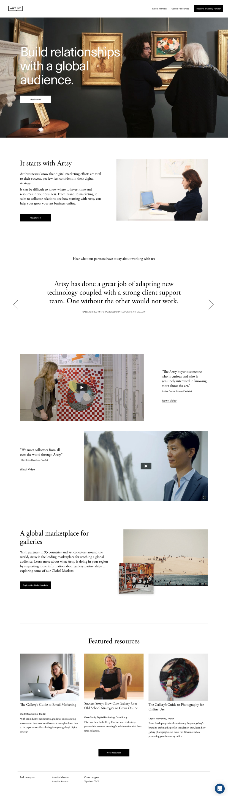
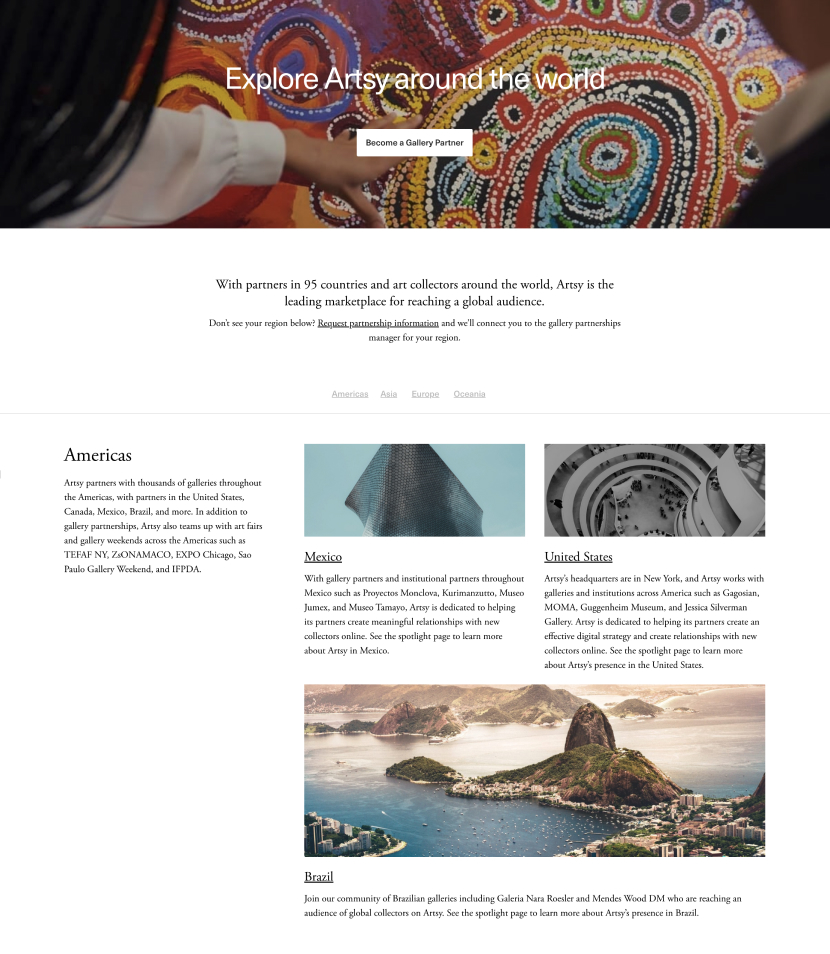
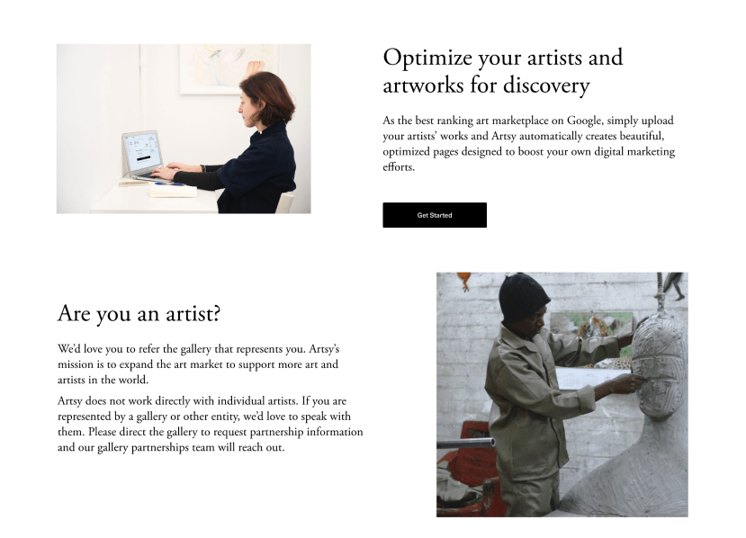
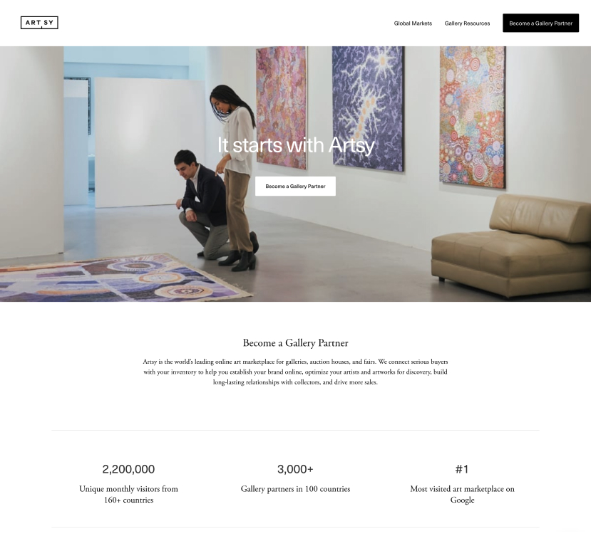

‹ Back Home
Artsy: Gallery Partnerships
Refined and established brand
Artsy came to Social Driver with an already well defined and respected brand. They also had a very clear content and business strategy for this new microsite. Our job was to merely bring these elements together and get out of the way.
Upon the completion and review of content, wireframing began in earnest. Working alongside the UX team, I layed out the structure for the entirety of the site allowing us to see quickly what modules would be needed.
Wires in hand we worked within the Artsy design system, to create molecule level components that could be used anywhere within the microsite. The end result was one of the cleanest and fastest turn arounds on project in Social Driver history.
Primary Collaborators
Casey DenBlayker, Design Director Jake Reid, User Experience Brittney Walker, Developer



